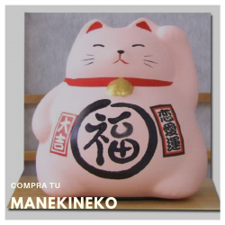

Que Representa el "Maneki-neko"?
maneki-neko (招き猫), o el gato que nos invita a entrar con su patita levantada, es quizá uno de los amuletos japoneses más conocidos fuera de las fronteras niponas pero, como hemos dicho en otras ocasiones, a veces se piensa que es chino. comprar manekinekoEste gato japonés de la buena suerte es un divertido gato blanco con una de sus patas levantada a la altura de la oreja y con la palma hacia delante, gesto japonés para llamar a alguien y pedirle que se acerque a nosotros. El gato es muy querido por los japoneses y es frecuente verlo en cualquier establecimiento o casa japonesa, ya que se cree que llama a la prosperidad, la felicidad, el éxito o el dinero. Normalmente el maneki-neko usa la pata izquierda, que es con la que se supone atrae a los clientes, mientras que si levanta la pata derecha atrae al dinero y la fortuna. Hay algunos gatos que tienen ambas patas levantadas, pero a los japoneses no les gustan demasiado porque les da la sensación de querer abarcar demasiado, de estar haciendo trampas, por decirlo de alguna manera. Del cuello del maneki-neko cuelga un pequeño cascabel que, se supone, ahuyenta a los malos espíritus, mientras que en la otra pata tradicionalmente tiene agarrada una moneda de oro ovalada del periodo de Edo llamada koban, símbolo de la fortuna y la prosperidad.
Cual es el origen del "Maneki-neko"?
El origen del maneki-neko no está claro y existen muchas teorías al respecto. Para algunos, el dulce gatito fue creado durante la restauración de Meiji imitando el gesto que hacían las prostitutas para llamar a sus clientes en la calle. Para otros, su origen se encuentra en una leyenda del santuario de Imado, en Tokio. Pero lo cierto es que la teoría más extendida sobre el origen del maneki-neko es la que podemos encontrar en el templo Gotokuji de Tokio y que podéis leer en profundidad en el post que dedicamos a este templo. La historia cuenta que un gato, con sus señas, salvó la vida de un señor feudal de gran fortuna haciendo que dejara un árbol bajo el que se cobijaba y fuera hacia ese templo. Maneki-neko de distintos tamaños en el templo Gotokuji de Tokio. Cuenta la leyenda que un día, un señor feudal y hombre de gran fortuna llamado Ii Naokata, fue sorprendido por una tormenta mientras cazaba. El hombre se refugió en un árbol cerca del templo y, mientras esperaba a que amainara la tormenta, vio un gato que parecía hacerle señas para que se acercara a la puerta del templo. El hombre quedó tan sorprendido que dejó el refugio que le daba el árbol para acercarse a al gato y verlo mejor, justo cuando cayó un rayó sobre el árbol que le había dado cobijo. Agredecido por haber salvado su vida, el hombre donó al templo campos de arroz y tierras de cultivo, financió las reparaciones del templo y éste prosperó y cuando el gato murió, recibió un solemne y cariñoso entierro en el cementerio para gatos del templo Gotokuji y se creó el maneki-neko en su honor.